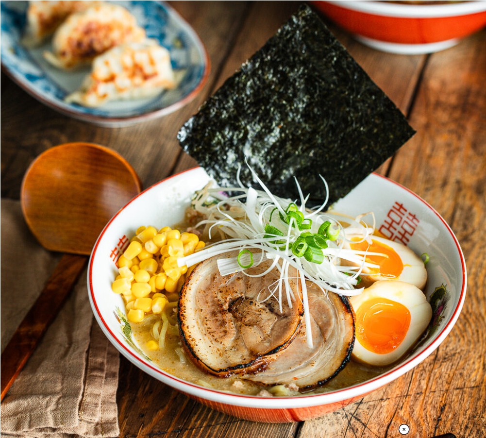

Japanese Miso-Soup class
4 hour class
Take class to learn how to make Miso Ramen soup at home. Lot of information and tips will be shared on what ingredients to use and what techniques.

Take class to learn how to make Miso Ramen soup at home. Lot of information and tips will be shared on what ingredients to use and what techniques.

An intense one-day course looking at how to create the most delicious Sauces for use in range of Japanese cookery.

A five week intro to traditional Japanese Vegeterian meals, teaching ou a selection of rice and noodle dishes.